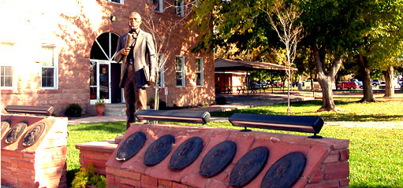

.png)

The Cotton Mission
Thousands of people left their homes to come to Northern Utah to find a new life, and to live the religion of their choice. Arriving exhausted and ill, having hastily buried hundreds of loved ones along the way, they started their new lives. From this weary group, Brigham Young asked thirty-eight (38) families, all from the southern states, to travel to Southern Utah to grow cotton. These southerners were from Mississippi, Alabama, Virginia, Texas, Tennessee and the Carolinas. This was the Cotton Mission, or sometimes called the Southern Mission. Washington City was the first town established in the Virgin basin for the purpose of colonizing the land so that cotton could be grown.
"Grow cotton," he challenged them, knowing that war between the North and South would soon erupt. Cotton would not be available for use by these Utah pioneers. This directive was given to people who had left the fertile South to make their trek to Utah. They knew how to grow cotton, or at least had seen it grown. These families were the forerunners of what would become known as "Utah's Dixie"-- so named by these stalwart Southerners, who were no doubt homesick for the lives they had left behind. The name spread to the surrounding areas known as "Utah's Dixie" today.